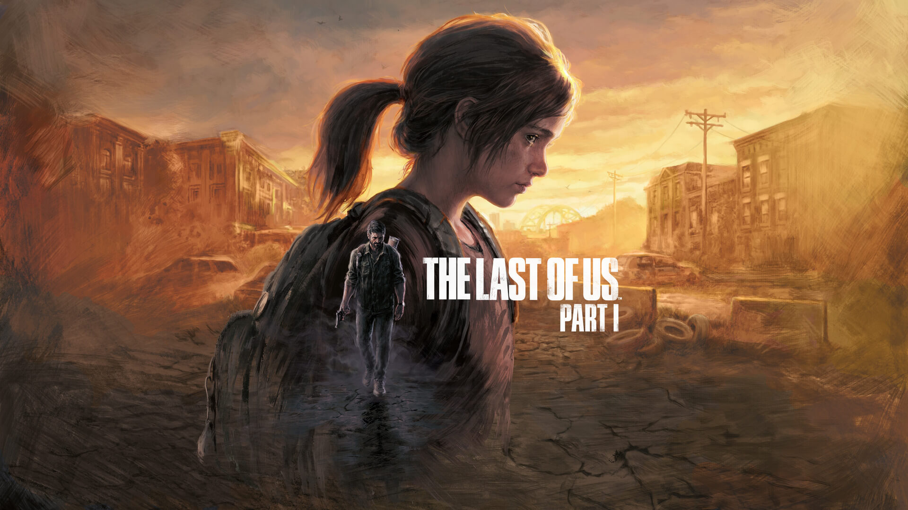

Plataformas: PlayStation 5, PC (Steam)
Desarrolladora: Naughty Dog
Distribuidora: Sony Interactive Entertainment
Precio: $59.99 USD
Género: Acción, Aventura, Supervivencia
Modo de juego: Un jugador
Idioma: Voces y textos en español
Lanzamiento: PS5: septiembre 2022 / PC: marzo 2023